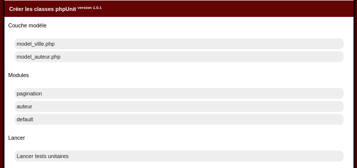

Test unitaires: Une nouvelle extension
Retour au menuIntroduction
Les tests unitaires permettent d'améliorer la qualité de vos développements.Mais l'écriture, le démarrage de leur écriture est un peu lourd, pour faciliter un peu cette mise en marche, le builder se dotte d'une extension:
Présentation

Qui vous propose 3 parties: Couche modèle, modules et Lancer

Qui peut se résumer à 2: Générer et Lancer
La première partie permet de lire vos fichiers projets pour vous aider à créer vos tests unitaires. La seconde, de les lancer.
Génération de couche modèle